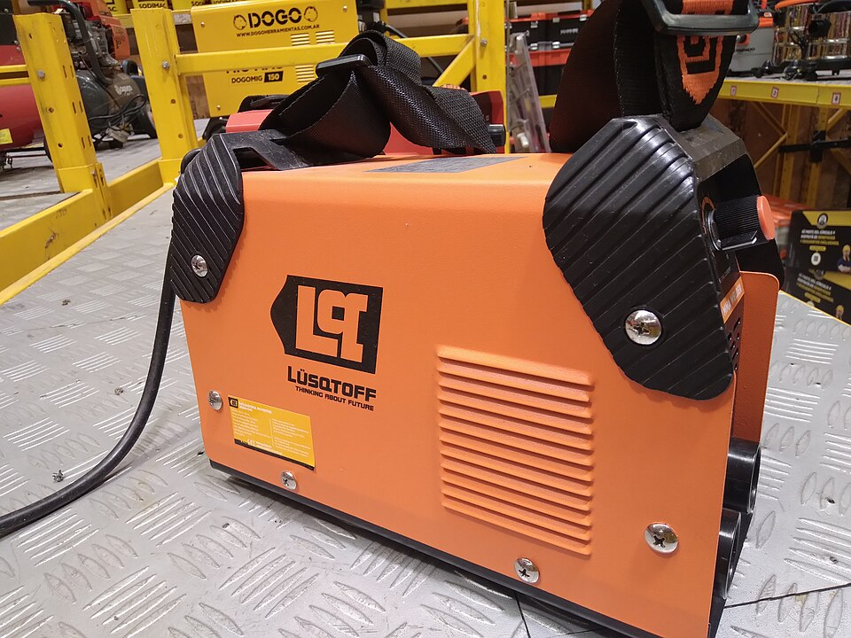

Welding-set repair: your learning and shop plan
Learn to diagnose the welding machines already coming into your family’s power-tools shop. Every repair skill has a nearby explanation of the component’s physics, ready when you need it.
W09 · Build your first 230 V stick welding set W10 · Qualify a manual batch for sale in IndiaNew to electronics? Start with P00 · Your ECE foundation. Its meter, soldering and power checkpoints lead into this track’s battery-powered rectifier lab.
See real welders and a photographed inverter teardown in W01 W08 · Design your own stick set and build its 9 V current-control trainerWhat this trade is called
“Welding set” is normal workshop language in India and Pakistan. In service literature, look for welding power source repair, inverter welder troubleshooting or component-level power electronics repair. For rod welding, the process is MMA (manual metal arc), also called SMAW or stick welding. The machine supplies controlled electrical power to the arc.
Your first target is a common single-phase DC MMA inverter. Transformer AC welders, transformer-rectifier machines, MIG wire feeders, AC/DC TIG and engine-driven sets have different circuits. Record what your customers actually bring before buying specialised equipment.
For an adjacent job from the same customers, learn to collect a plasma-cutter fault and triage record. The Ludhiana repair-shop guide compares parts, bench testing and local demand across fabrication and other industries.
The BMS track teaches building controls for the Australia job route. This track develops another useful skill around an existing business and customer flow. Keep a record of outsourced diagnoses, actual parts fitted, time spent and repeat failures. That becomes your local evidence about which machines are worth learning first.
A repair is a chain of evidence

Photo by Just a Man, resized. Original photo · CC BY 4.0.
.jpg){kind=link}
Watch on YouTube · Tips for Maintaining Your MIG Welder · Miller Welders
Watch the maintenance done at the outside of the machine. Separate these checks from internal diagnostics that require a repair bench and mentor.
Use this sentence on every job: “The complaint is __; the measurements show __; that implicates __; the likely cause is __; the repair passed __.” A burnt bridge rectifier proves that the bridge is damaged. It does not prove that the bridge was the only problem. A downstream short, failed inrush circuit or poor cooling may have overloaded it.
Videos are useful for recognising components and seeing how a technician works. Pair them with the exact device datasheet and the matching machine schematic. Predict each reading before watching the answer. Record what would make your diagnosis wrong.
The practical study route
| Stage | Do this | Evidence that you are ready to move on |
|---|---|---|
| 1 · Meter and small circuits | P03, P05, then W02. Use batteries and loose parts. | Eight bridge-junction readings, correct probe polarity and a clean solder joint. No customer machine needed. |
| 2 · Understand the machine | W01. Read three customer nameplates and draw the power path from a manual or photographs. | You can distinguish an input bridge from output fast diodes and identify what is connected to mains. |
| 3 · Learn cold diagnosis | W03. Work with a technician on an isolated and verified de-energised donor machine. | A labelled board map and repeatable measurements that separate a part fault from parallel circuit paths. |
| 4 · Understand failed switches | W04 with T20 and T21. | A loose-device 9 V test and a driver-neighbourhood checklist. You can explain why a new IGBT might fail again. |
| 5 · Reason through faults | W05 and the annotated resources in W07. | Written diagnoses of five cases, including alternative explanations and the next discriminating test. |
| 6 · Complete supervised repairs | W06 and R04. | An end-to-end repair record with the mentor’s power-up and safety checks, measured load performance and handover. |
Work through the stages at your bench pace. After the loose-device test, practise locating a missing pulse with W04’s 5 V PWM scope exercise. Access inside a real welder begins only after the preparation in W01 and a competent technician’s isolation and stored-energy checks.
When a component makes you curious
Open the physics lesson at the point the repair raises the question. Each lesson also links back to the repair that uses it.
| You see or hear | The question to understand | Physics lesson |
|---|---|---|
| Input bridge rectifier | How can either AC polarity produce the same DC polarity? | T11 · junctions, T11+ · deep dive, T22 · real power diodes |
| Large electrolytic capacitor | Why is charge stored after unplugging? Why can a normal-looking capacitor be bad? | T05 · fields and energy, T23 · ESR and ageing |
| MOSFET | How does an insulated gate create a channel? Why is threshold not full drive? | T13 · MOSFET physics |
| IGBT | Why add bipolar conduction, and why is turn-off not instantaneous? | T12 · bipolar carriers, T20 · IGBT physics |
| Ferrite transformer / output choke | How do changing flux and stored magnetic energy move power and smooth current? | T06 · inductors, T08 · transformers, T21 · converter operation |
| Gate driver / PWM / current sensor | How does a knob become controlled arc current, and what turns a fault off? | T14 · feedback basics, T21 · drive and regulation |
| Output rectifier / snubber | Why can a diode pass a meter test but fail during switching? | T22 · reverse recovery and parasitics |
| Heatsink / fan / thermal trip | Where does heat go? Why can a small resistance destroy a high-current joint? | T03 · power, T23 · thermal failure chains |
Your first week at the shop
Start an intake notebook. Record ten incoming machines: brand, model, board revision if a technician has identified it, input supply, stated symptom, repair outcome and outsourced cost. Do not open them to collect this information.
Choose one representative donor. Ask your existing repair technician to identify a common machine family and a matching schematic. A donor that you own is a better learning object than an urgent customer job.
Learn a complete rectifier test. Do W02 using loose parts. Explain each forward and reverse reading from the diode orientation.
Arrange mentored observation. Follow one repair from intake to return-to-service. Fill R04 with actual observations, leaving unperformed checks blank. Keep customer work outsourced until your mentor has verified the relevant skills.
A technician says “rectifier problem”. What do you ask next?
Which rectifier: the mains input bridge, the auxiliary-supply rectifier, or the high-frequency welding-output rectifier? Ask for the part marking, its place on the schematic, the isolated test readings and what caused the failure.
Skills checklist
- I can name the first machine family I want to learn.
- I can find a physics lesson for each power-stage component.
- I have a notebook and a concrete first battery-powered lab.
- I can distinguish a failed part from a confirmed cause of failure.